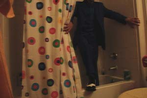

-
Info
SCP-2030: LAUGH IS FUN by PeppersGhost.
Click here for more work by this author!
⚠️ Content warning: This work of fiction involves scenes which depict or allude to topics which may be particularly distressing for some readers. Please scroll for a list of such topics contained in this piece.
- Body horror
- Car accident
- Cancer
- Childbirth
- Death
- Gore
- Torture
- Violence
Readers with particular sensitivities should also be aware that this story also depicts or alludes to the following subjects which are less prevalent among content advisories, but nevertheless have the potential to be disturbing:
- Force-feeding
- Non-human birth
- Oral violation (non-sexual)
- Physical restraint
- Skinning
- Stomach rupture
- Mutation
- Margaret Thatcher
SCP-2030 manifesting on a popular on-demand video streaming site.

Still frame from hidden camera footage of SCP-2030-1 revealing itself.
Item #: SCP-2030
Object Class: Keter
Special Containment Procedures: Foundation-operated web analysis bot Delta-09 ("LAUGHSTOP") is to be kept in constant operation and checked for defects twice a week by a Level-2 staff member familiar with its operation. When functional, the bot will search a wide range of file sharing and video streaming websites for SCP-2030 and remove any manifestations discovered.
Finding and isolating SCP-2030's point of origin is considered a Delta-Level priority. Efforts to locate the studio where SCP-2030 is filmed are ongoing.
Description: SCP-2030 is an anomalous phenomenon that manifests as a television series. The medium through which SCP-2030 manifests changes depending on the most popular format currently in use; as of 2014, SCP-2030 most commonly inserts itself into automated DVD rental kiosks, file sharing websites, and paid on-demand video streaming services. Prior to 2012, SCP-2030 commonly manifested as a DVD set in video rental stores, and as VHS tapes prior to 2003. Thus far, no reliable evidence that SCP-2030 manifestations took place prior to the year 1993 has been discovered; however, thirty-eight (38) seasons of programming are known to exist, implying that SCP-2030 has been active to some degree since 1976.
The series' title typically appears as Laugh is Fun, although variations on this name, such as Laugh is Life or Laugh is Laugh, are not uncommon. The series has no corresponding "box art"; it mimics art from other television series, often causing viewers to select it mistaking it for another program.
The show is a hidden camera comedy series, showcasing the candid responses of various people to bizarre, disturbing, and often anomalous situations. Episodes usually run between 10 and 12 minutes, and feature introductory and closing segments that bookend the hidden camera footage. No episode to date has had an end credit roll.
SCP-2030-1 is a (presumably) human adult male that serves as the show's host, providing introductory and closing commentary as well as appearing to "victims" to reveal that they are being filmed for a television series. SCP-2030-1 is invariably shown wearing a royal blue three-piece suit with black and white wing tipped shoes. Due to the way in which scenes are filmed, SCP-2030-1 is only seen from the neck down, making identification difficult. It refers to itself as "Laughy McLaugherson".
Individuals appearing on the show often react to the events that they witness with panic or distress, but appear immediately calmed upon the appearance of SCP-2030-1. This is true even when the individual in question has sustained significant bodily harm or witnessed a particularly traumatic event. Additionally, most recorded individuals seem to express some degree of familiarity with SCP-2030-1, with some claiming to be fans of the show. Research into whether SCP-2030 uses its viewership as its victim selection pool is ongoing.
Episodes follow a particular theme that each prank segment alludes to. SCP-2030-1 introduces these themes at the beginning of each episode in an as-of-yet unidentified film studio whilst standing atop a bright yellow stage decorated with oversized geometric shapes of various colors. Episode themes vary from the mundane, such as 'the beach', 'pets', and 'candy', to the strange and violent, such as 'mail fraud', 'arson', and 'terrorism'. SCP-2030-1 delivers a similar speech at the end of each program to close out the show.
At the end of each episode, the camera pulls back and around from SCP-2030-1's stage to show the studio audience, which usually comprises the individuals featured in the episode. During this time, the words 'Filmed in front of a studio audience. Created in partnership with YWTGTHFT' are superimposed over the footage in white text. Research into the identities of the people featured in the show's prank segments has revealed that they are all persons who were officially documented as having died or gone missing in the year they appeared on the program.
Thorough investigations into the deaths of SCP-2030 participants have revealed a number of inconsistencies and contradictions in matters concerning the circumstances of the deaths. Additionally, exhumations of the individuals' remains have revealed that all recorded participants' bodies are currently missing. The general consensus among researchers assigned to SCP-2030 is that victims are likely abducted after their use in the show, with their disappearances covered up when possible. However, no concrete evidence connecting the individuals' deaths with SCP-2030 besides the show's footage has yet been found.
The following is a transcription of a typical speech delivered by SCP-2030-1 during one of the show's closing segments:
Season: 32 (2008)
Episode theme: Printers
Transcription: Ha! What a ride, eh, folks? We've seen printers that eat, eaters that print, and everything in between! Makes you appreciate the old clunker you have back the office, doesn't it? No, printers may not always work when you want or need them to, but they sure make for some excellent comedy. And that's what we're about here: comedy. We're here to make you laugh. We hope you laughed. Thank you for laughing with us. That's what we're about here, doesn't it, folks? Come laugh with us again next time! And remember: LAUGH … IS … FUN! Good night! And laugh! And laugh! Just laugh! We love the make laugh. Make more for laughter so as to for laugh. Laugh with us. Laugh with us. (Studio audience joins in unison) Laugh with us! Laugh with us! Laugh with us! Laugh with us! Laugh! Laugh! Laugh and let us in!
Note: Video cuts off abruptly and a black screen is displayed for thirty seconds. Laughter and soft, wet noises can be heard in the background before the program ends.